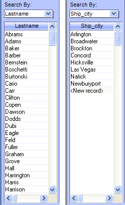
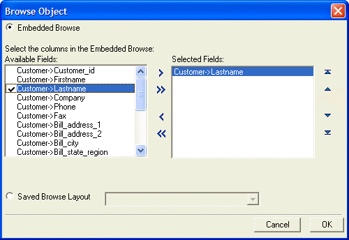
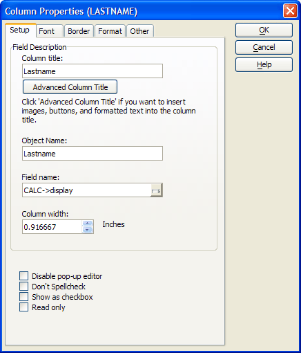

Configuring an Embedded Browse
The SearchBy combo box displays the fields of the Customer table. When the user selects an entry, the Browse1 list below it displays the field's name and non-null values. The picture below shows two examples of Browse1 displaying non-null values from the field in the Customer table that has the same name as the field name specified in the SearchBy combo box.

Procedure: Configuring the Browse1 Embedded Browse
The following procedure assumes that the developer has opened the form in the Form Editor. Follow these instructions to create an embedded browse similar to Browse1.
 Note : Unlike many
browse objects you will use, this one only has one column. For convenience
we will initially populate Browse1 with values
from the Lastname field.
Note : Unlike many
browse objects you will use, this one only has one column. For convenience
we will initially populate Browse1 with values
from the Lastname field.
Place a browse on the form.
Select the Lastname field to display in the Browse Object dialog box.
Click the
 button to add a field to the browse. Click the
button to add a field to the browse. Click the  button to remove a field from the browse. Click the
button to remove a field from the browse. Click the  button to move the selected field up (to the left on the
browse). Click the
button to move the selected field up (to the left on the
browse). Click the  button to move the selected field down
(to the right on the browse).
button to move the selected field down
(to the right on the browse). Click the OK button when the Customer->Lastname field has been selected.
Select the browse. Right click the browse and choose Properties.... Clear the Row Selector option from the Browse tab of the Browse Properties dialog.
If the browse object is not selected, single click on it to select it.
Double click the column title. If the entire column is not selected, click one more time to select entire column.
Right click the column title and choose Delete Column.
If the DragDrop list is not visible, click View from the top menu, then click DragDrop list. Choose the display calculated field from the DragDrop list and drag it over to Browse1 and drop it inside.
If the entire column is not selected, double click the column title, and then click it one more time.
Right click the column title to show the Design Menu for the column and select Properties.
On the resulting Setup tab of the Column Properties dialog box, enter the title in the Column title. In this case, in order to match the column name used in the OnChange event script of the SearchBy combo box, change the name of the column from "display" to "Lastname", omitting the space between "Last" and "Name".
Enter the width in the Column width field. In this case use 0.9062 (or something close to that depending on the font you're using on your system).
Then display the Format tab, and set Horizontal alignment to "Left".
Now save the current layout, and view the form.

 Note : At this
point if we stopped our design the browse object will always display Lastname field values even when the Customer table
is filtered or sorted differently. The one column in the embedded browse
object is bound to the Lastname field in the
Customer table. In order to use the browse object to display the values
from other fields in the same table we have to do some more work.
Note : At this
point if we stopped our design the browse object will always display Lastname field values even when the Customer table
is filtered or sorted differently. The one column in the embedded browse
object is bound to the Lastname field in the
Customer table. In order to use the browse object to display the values
from other fields in the same table we have to do some more work.
 Note : This is
how one adds columns to an embedded browse. You drop them there from the
DragDrop list. Note also that at this point
the one column in the browse is now bound to the Calculated field display.
Note : This is
how one adds columns to an embedded browse. You drop them there from the
DragDrop list. Note also that at this point
the one column in the browse is now bound to the Calculated field display.
So, what is it that makes it possible for a single column in the embedded browse object to display field values from any field selected by the user? Well, remember that the column's properties have now been set for each record to match the value of the Calculated Field named display. Here's the expression used to define the "display' calculated field:
|
CALC->display = eval(Var->vcSearchBy) |
An Explanation of the Expression
This expression causes Alpha Anywhere to retrieve the current value of the variable vcSearchBy, evaluate it, and then assign it to the display Calculated field. Recall that the vcSearchBy variable is the same variable assigned to the SearchBy combo box. It will always hold a field name from the Customer table. When Alpha Anywhere evaluates the current field name found in the SearchBy combo box, it retrieves the corresponding field value from the current record in the Customer table. This field value is then assigned to the display calculated field for each row of the Browse1 browse object. Since each row corresponds to each record in the Customer table, the desired effect is achieved.

See Also
Embedded Browse Properties Most Frequently Used, Opening a Filtered Browse on another Form